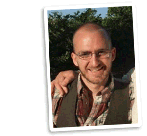

My roundabout journey to CS - first as a sailor and then as an education student - has given me a desire to create technology with lasting positive impact, and a unique set of tools with which to do both.
- Education
-
Utah State University, Logan, UT, May 2015
Graduated summa cum laude with BSc in Computer Science/Mathematics Minor
-
University of Edinburgh, Scotland, UK (2013-2014)
Visiting Student, School of Informatics
-
Honors/Extracurriculars
- Graduated Summa Cum Laude, 2015
- Qualified Google Code Jam, 2014
- UoE SmartData Hack, 2014
- 1st Place, UoE GameDevSoc GameJam, 2013
- 14th Place AUVSI Robosub competition, 2013
- Lillywhite Scholarship For Engineering, 2013
- Experience
-
Part Time Sys/Web Admin and Tech Advocate - Provo, UT (2008-Present)
- Led the procurement and installation of a $50k (W)LAN infrastructure in 2013
- Provided web server administration and website maintenance including SEO and Adwords
- Managed a small network of 200 computers
Deckhand/Apprentice Carpenter - Long Island, NY (Jan. 2009 - Nov. 2009)
- Completed two transatlantic voyages under sail and power
- Practiced celestial navigation, chart-keeping, carpentry, sailing, and rigging
- Took part in physically and mentally challenging work under dangerous and stressful conditions as a part of a tight knit group
- Skills
-
Technical
Python, Scientific Python Stack, C/C++11, R, Objective-C, Java, Matlab, Rust, Haskell, Coffee/JavaScript, *nix, Bash, HTML5/CSS, node.js, LaTeX, Git, Photoshop
Other
Carpentry, navigation, rigging, seamanship, survival skills, gardening, wilderness first aid (WFA) certified, STCW certified
- Projects
-
A Chrome extension that injects dice rolling functionality inline into roleplaying reference documents for games such as Pathfinder and DnD
- Created jQuery/javascript injection code
- Recruited and collaborated with a small group (~20) of alpha testers
- Handled bug reports and ongoing support
-
MoodSP scrapes and performs sentiment analysis on meeting transcripts to give users an at-a-glance look at an SMP's current mood.
- Used Python and NLTK to do scraping, parsing, POS tagging and sentiment analysis
- Presented results to Scottish Parliament and the Parliament's Open Data Team
-
- Responsible for new hardware installation (mostly structural, some electrical)
- Researched stereo vision to improve mapping/decision making
- Co-wrote practice and competition missions using python and the ROS SMACH library
-
- Created simple games to explore the idea of learning through play
- Taught math and basic programming concepts to a group of 4th graders